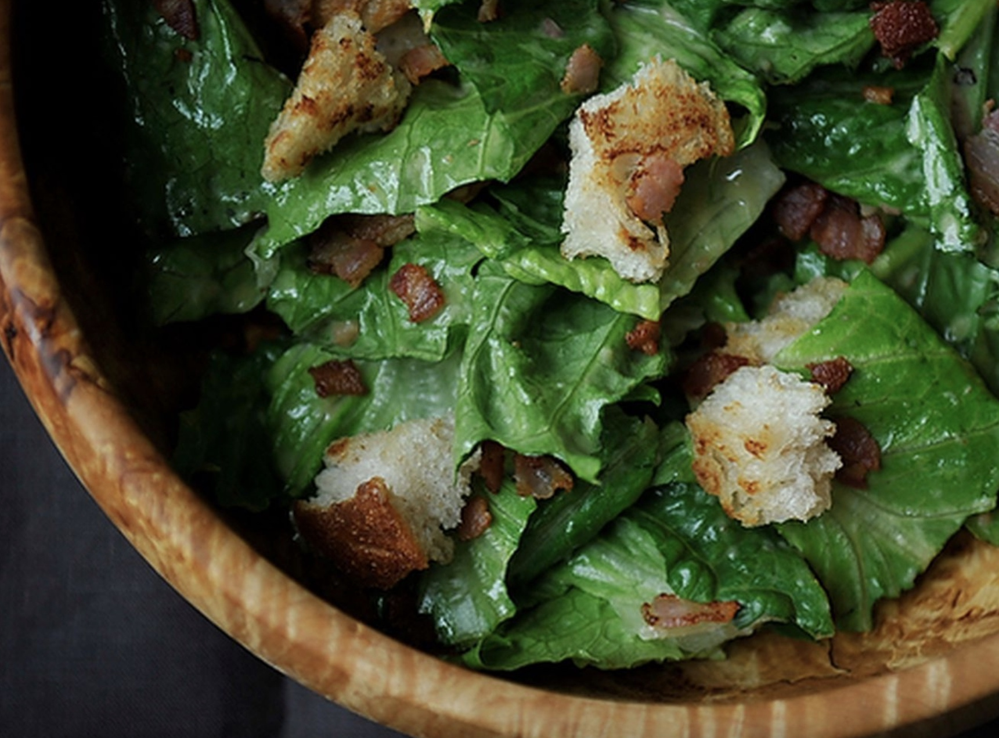

Caesar Salad with Pancetta
Recipe by MARIE VILJOEN

A bold and interesting take on the classic Caesar salad. Invented in Tijuana, Mexico by an Italian chef, this Caesar salad with Pancetta will bring zest to the traditional recipie with flavors of bold lime.
Serves: 1
Ingredients
Method
- In a bowl beat the lime juice into the softly boiled egg yolk.
- Add the crushed garlic.
- Add the finely-chopped anchovies.
- Add black pepper.
- Gradually whisk in the oil.
- Add the Parmigiano.
- Taste. If you need salt, add it now.
- To the bowl, add the Romaine and toss well with your hands.
- Lick your fingers.
- In the same pan in which the pancetta crisped, toast the torn up pieces of sourdough over medium heat. When cripsy, rub each piece lightly with the whole garlic clove. Toss over salad.
- Add pieces of crispy pancetta.
- Enjoy with some cold, fruity white wine.